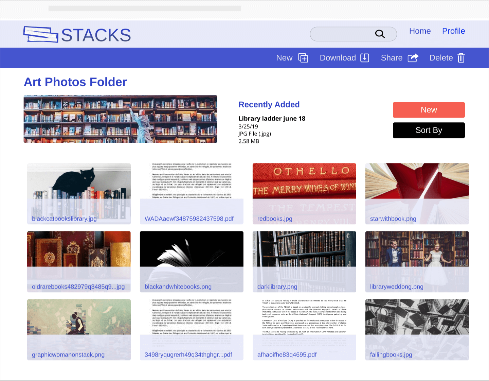

Stacks is a cloud storage website for the everyday user. For this project, I was a generalist and took on everything from research, user testing, branding design, and UX/UI design. The tools I used were Invision, Figma, Google forms and Usabilityhub.
STACKS CASE STUDY

Problem -
Cloud storages often become cluttered, unorganized and hard to search. It doesn’t help that there are often unnecessary features to make them overly complicated. Additionally, sharing folders or items by link makes your items less secure. You’re forced to choose between security and convenience.
Solution -
To create a secure space that’s easy to share individual files or whole folders, either by link or email. You also have the option to password protect links. Large files are easy to save and share with up to 10TB of free space, with the option to pay for more space if it’s needed. Users can also tag items with custom keywords for easy searching.
Competitive Analysis
Google Drive, Evernote and, Dropbox were analyzed. This analysis was useful to discover the parts of each product that are vital in the design of a cloud storage. Evernote’s ability to tag files for later searches. Google’s large amount of free storage. Dropbox’s streamlined and easy to use service, their ability to share with non-users, and ability to create passwords when sharing. A weakness of one application was a strength for another.
User Survey
A user survey was created and 100% of those surveyed used Cloud Storage and/or organization websites and applications. Next, I looked at what users liked about the current Cloud storage they were using.
- Cons:
- Difficult to track what and when things are shared
- Storage space is limited and I don’t like paying for the additional
- It could be hacked
- No Subfile organization
- Pros:
- The easy share and modify of documents with teams /clients /friends /family
- Easier send to multiple people
- Easier to send large files
- Information is in one place and accessible from almost anywhere

User Personas
When comparing personal and work use, over 75% use these products for work and 90% use for personal reasons. The personas synthesized what was learned about the users and how the products could be used in their day-to-day lives. This especially useful because the client didn’t have a target audience.
User Stories, Flows, and Wireframes
User stories were needed to help focus in on the tasks that were important to include in the most viable product and to create User Flows. Then Wireframes were then created to begin the rough design and layout of the website.

High Fidelity Mockups
When working on the High Fidelity Mockups, it became apparent that the landing page was bare and it needed to be longer with more information about the product. More buttons were added to give the user more chances to sign up or log in.
Preference Testing
Preference testing was used to test if the text background images and the hero image for the landing page. For the hero image, 77% of testers preferred the image of the stack of books to the side. Giving reasons like “it's cleaner” and “makes sense with the website’s name”.
For the dashboard, 62% preferred no background image because it was “cleaner”, “less busy”, “easier to read”. Without preference testing, the background image would have been used on the dashboard and folder pages because that’s what I prefer. It was helpful there was a clear winner in all the preference tests. This was reassuring to make choices about what to change.
Branding
The name Stacks came about when thinking of a place you share information and images, like the library, but a library is a serious place and it needed to be more playful than that. The stacks are the back of the library where the scientific and architecture books are piled. It’s also a place you might slip off to for a moment alone with someone else for a conversation or something more. It’s a place that’s real but has almost mythic other meaning.
A moodboard was used to come up with a color scheme. The website is colorful like a pile of books often is. Stacks is blue for intelligence and trustworthiness and its red for passion and creativity. Further inspiration eas found from the Russian Banking website Creddy that was found on Land-book. It used the same colors, but executed them in a safe way that was less intense than the choosen original colors.
The logo is two books intertwined within each other to form an “S”. There was feedback that not everyone sees the “S” shape and it may read as “tacks” so it was changed so the books are next to or above the full “stacks” wording.
Clickable Prototypes
Two prototypes were created using inVision, one was a wireframe prototype and the other was a high fidelity prototype.

User testing
User testing results showed that the website was easy to navigate. It also revealed what needed to stay or be changed. The tagging screens needs to be fixed because 100% of users didn’t see the tags. All three hesitated before using the plus sign to add a tag. Two of the participants tried to add the tag the same way you would add a file. To fix this the “Tags” title, the tags themselves and “+” icon next to the tags were all made larger. Everything was moved half way up the page too.
Conclusion
From conception to completion Stacks has gone through a lot of changes. Through user testing, it was found that the background images wouldn’t work because it made the files hard to read. The design of the tagging ws improved to make it more intuitive. Also, there were changes to to the taskbar and some of the orginal layout. One of the fonts was changed and some edits were made to the logo to make them more stylish and easier to read. Taking a vague concept and turning it into a tangible website was at times overwhelming, but it was enjoyable to work on Stacks and to make a cloud storage design tthat was easy to use, clean and minimalistic.